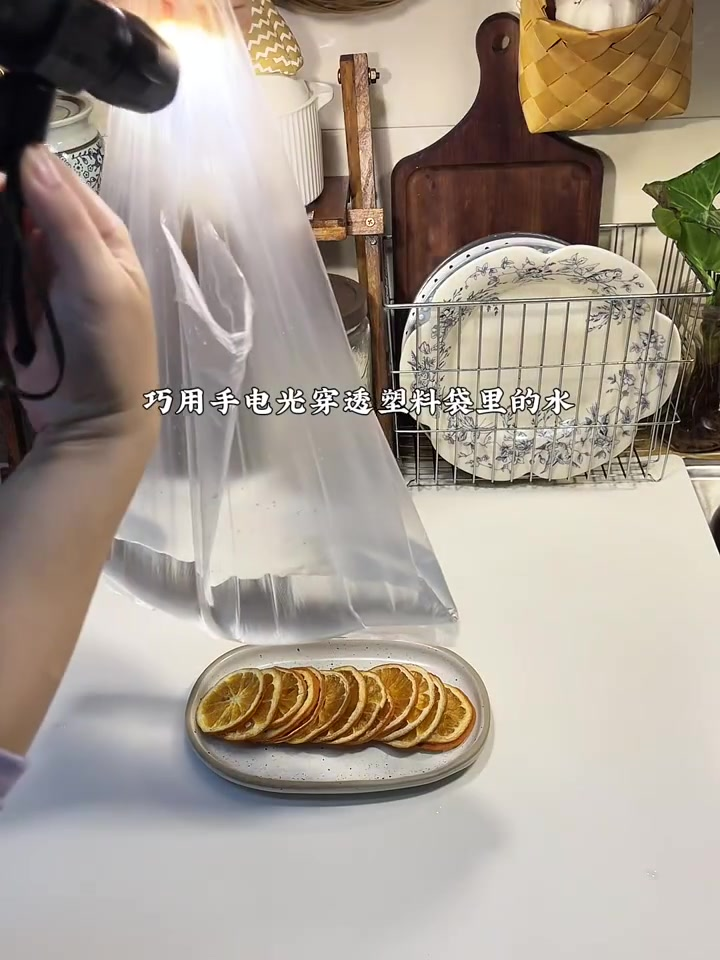
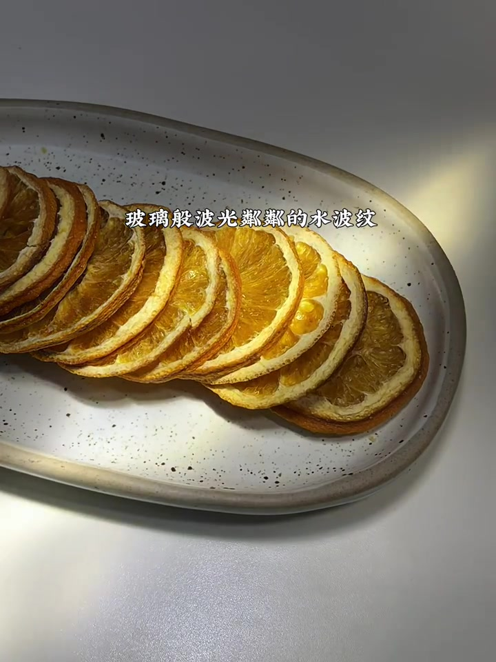
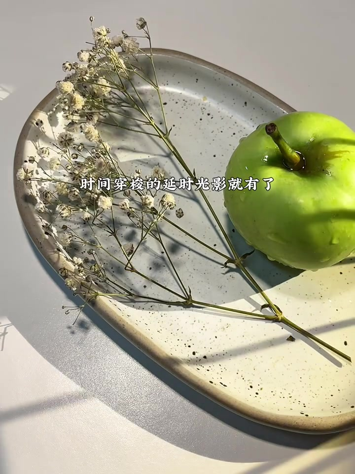
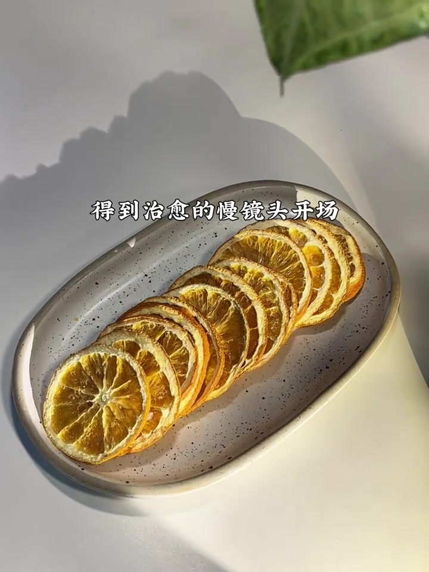
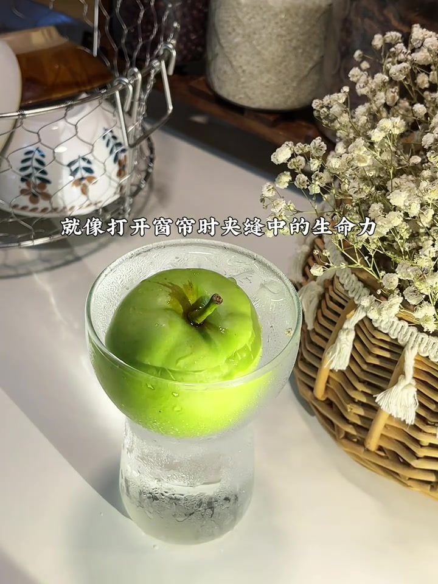
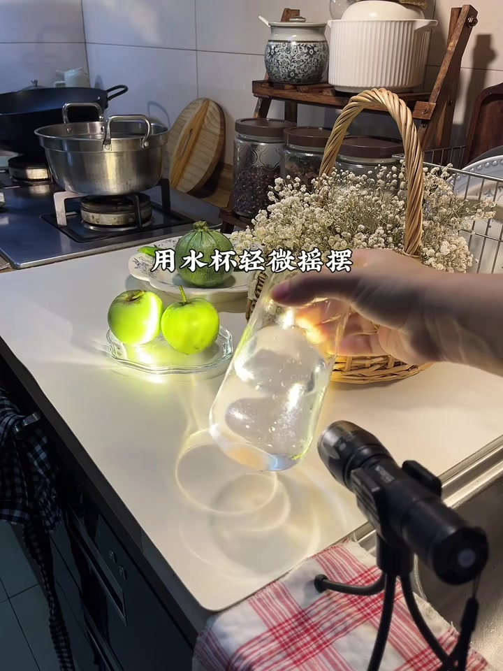
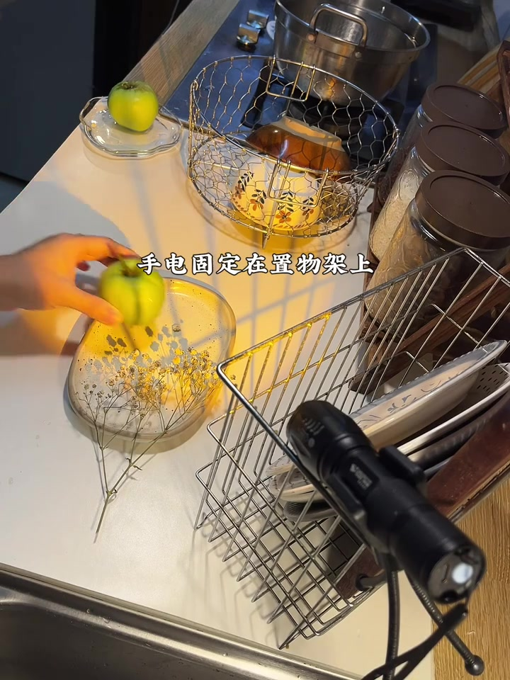
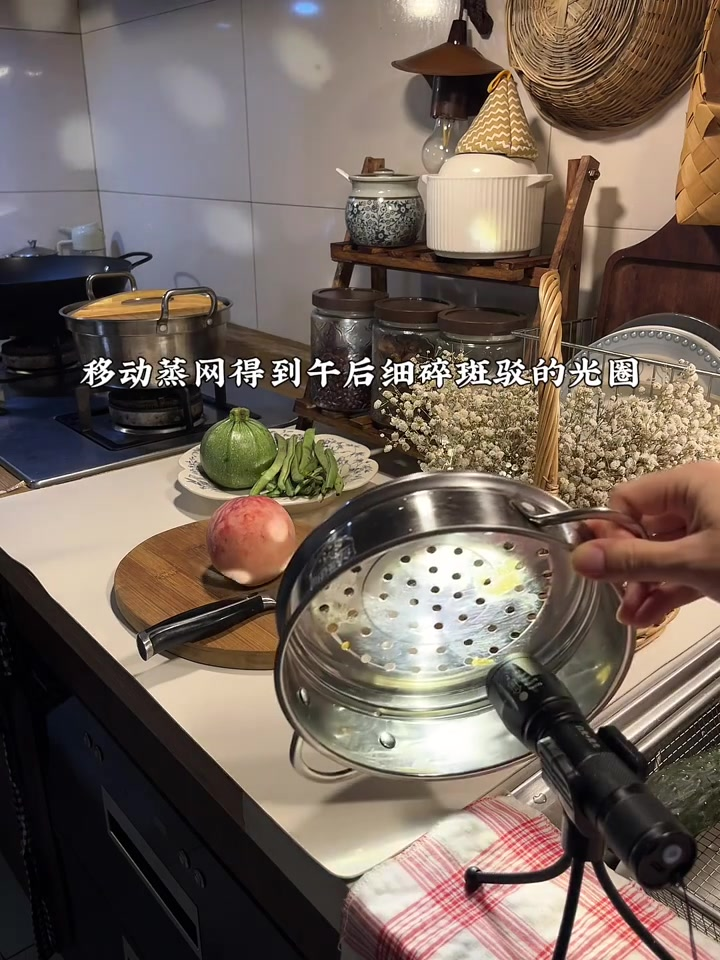

先亮出核心道具：手电 + 装水塑料袋
视频开场就在厨房台面操作：一只手持手机手电，另一只手提起装了少量清水的透明塑料袋，光束从上方穿过袋中的水，照向下方一排干橙片。画面字幕直接点明方法——巧用手电光穿透塑料袋里的水。
画面字幕：「巧用手电光穿透塑料袋里的水」
说明：原视频几乎无清晰口播，Whisper 在固定中文模式下把背景声误识成重复的「放入鸡蛋」等词。下文叙述以可见字幕与画面为准；页面末尾仍完整保留全部 Whisper 分段。

水袋晃动后，橙片上出现玻璃般水波纹
镜头切到特写：干橙片排成一列，右侧受强光照射，表面出现细碎、晃动的亮斑。字幕把它形容为「玻璃般波光粼粼的水波纹」——这正是水袋作为简易柔光/折射介质带来的效果。
画面字幕：「玻璃般波光粼粼的水波纹」

换成窗影线条，做出「时间穿梭」光影
下一组静物换成青苹果与白色小花。强侧光在盘面拉出多道平行斜影，像百叶窗或栅栏透过来的光。字幕说「时间穿梭的延时光影就有了」——把线条光影当成可快速切换的氛围开关。
画面字幕：「时间穿梭的延时光影就有了」

用慢节奏画面收出「治愈开场」
镜头回到干橙片：光从侧上方扫过，阴影拉长。字幕把它定位为「得到治愈的慢镜头开场」——这一段不只是效果展示，也在提示这类光影适合做 vlog / 美食片的开场氛围。
画面字幕：「得到治愈的慢镜头开场」

玻璃碗里的青苹果：像窗帘夹缝里的生命力
青苹果被放进带冷凝水珠的玻璃容器，强光从一侧打入，高光和阴影都很利落。字幕把这种感觉比作「打开窗帘时夹缝中的生命力」——强调的是窄束光带来的戏剧性与清新感。
画面字幕：「就像打开窗帘时夹缝中的生命力」

线条光要稳定：把手电固定在置物架上
画面先给出「窗户的线条光治愈干净」的静物效果——水杯中的青苹果被多道平行光影切开；随后字幕补上操作关键：「手电固定在置物架上」。也就是说，线条光不是手持乱晃，而是先固定光源，再让阴影规整。
画面字幕：「窗户的线条光治愈干净」→「手电固定在置物架上」


移动蒸网，做出午后斑驳暖阳
最后一组道具升级：手电架在小三脚架上，前方举着带孔的不锈钢蒸网。光穿过网孔，在台面撒出细碎光斑；字幕写「移动蒸网得到午后细碎斑驳的光圈」。收尾画面里，两只青苹果被橙黄色斑驳光覆盖，字幕收在「橙色像晚霞的暖阳」。
画面字幕：「移动蒸网得到午后细碎斑驳的光圈」；「橙色像晚霞的暖阳」
